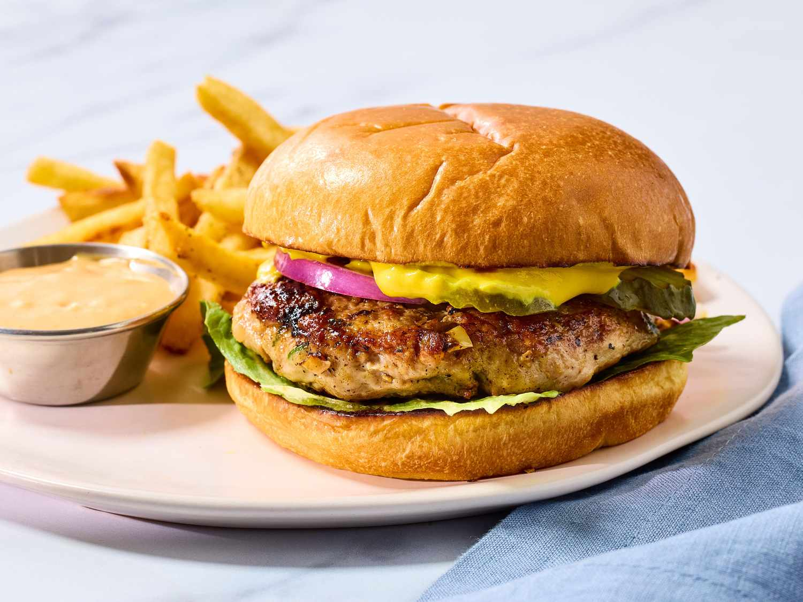

Turkey Burger Recipe

Description
The turkey burgers are cooked in a skillet on the stove in this recipe,
but you can also cook turkey burgers on the grill, in the oven,
and in the air fryer. Turkey burgers should be cooked until their
internal temperature is at least 165 degrees F.
- Grill: Lightly oil and preheat the grill.
Place turkey burgers on the grill, turning once, about 10 minutes.
- Oven: Preheat the oven to 350 degrees F and
line a baking sheet with parchment paper.
Place the patties on the baking sheet and bake for about 15 minutes.
- Air fryer: Preheat the air fryer to 360 degrees F and
place patties inside. Air fry for about 15 minutes, flipping halfway through.
Ingredients
- 3 pounds ground turkey
- ¼ cup finely diced onion
- 2 egg whites, lightly beaten
- ¼ cup chopped fresh parsley
- 1 clove garlic, peeled and minced
- 1 teaspoon salt
- ¼ teaspoon ground black pepper
Steps
- Gather all ingredients.
- Mix ground turkey, seasoned bread crumbs, onion, egg whites,
parsley, garlic, salt, and pepper together in a large bowl.
- Form into 12 patties.
- Cook the patties in a medium skillet over medium heat, turning once,
to an internal temperature of 180 degrees F (85 degrees C).
- Serve hot and enjoy!
Home